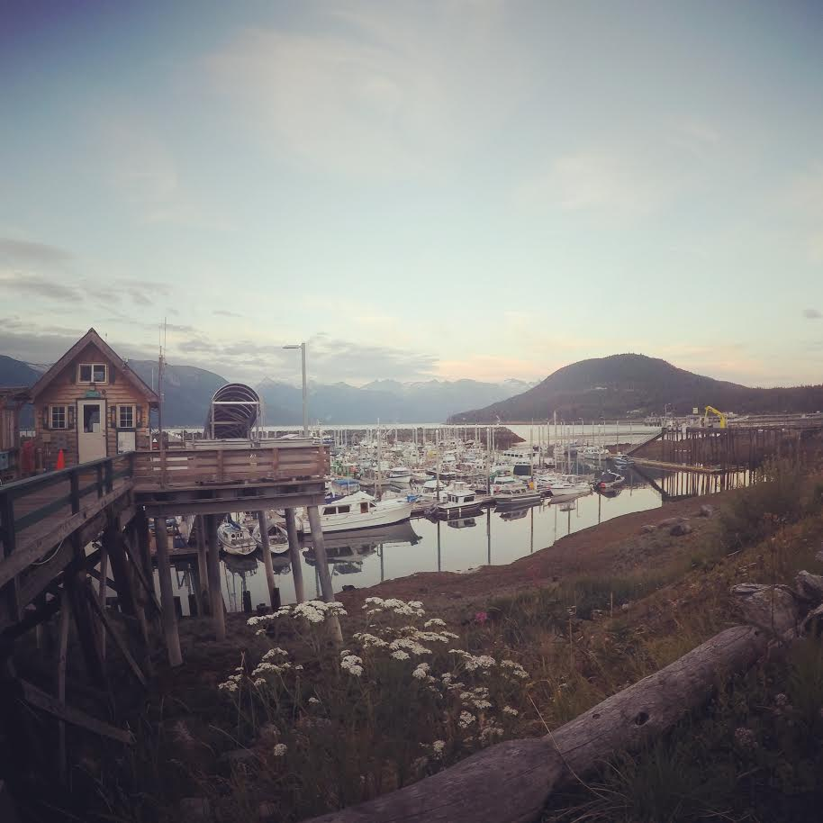
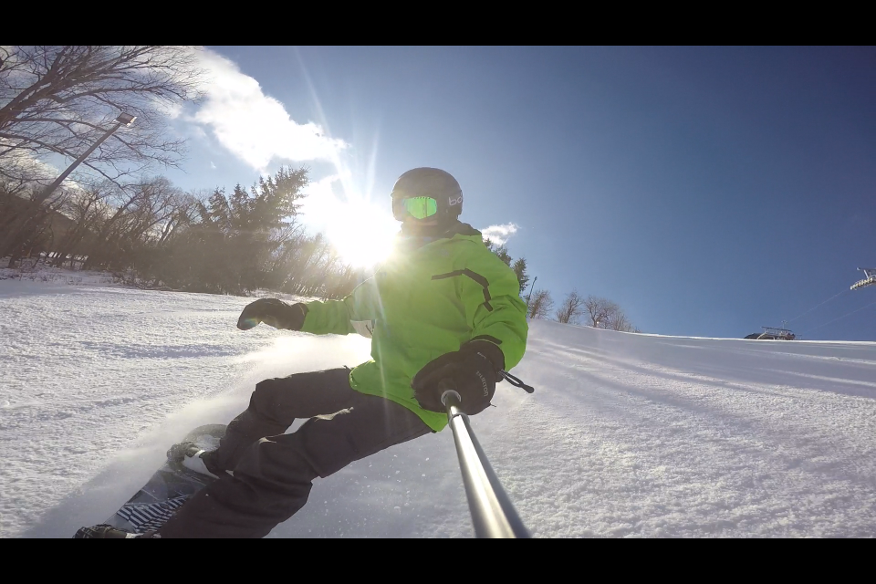
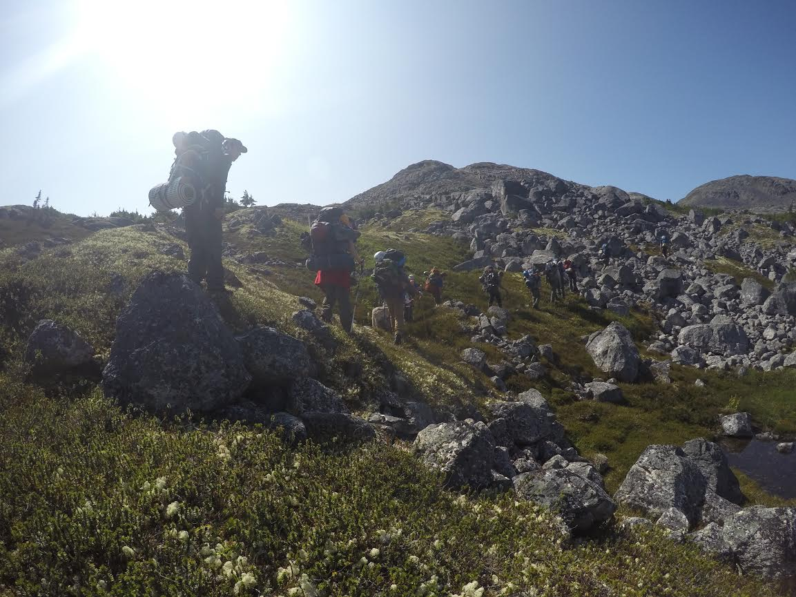
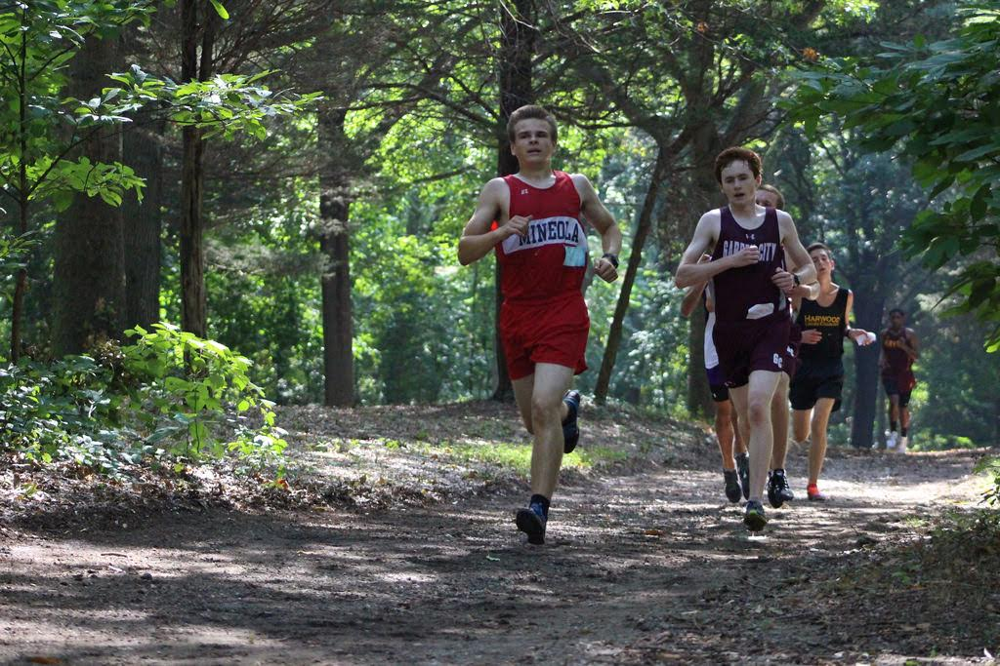

Who Am I?

I’m Joey Mueller and I'm an adventurer. I travel to some of the coolest spots on the map and find the most awesome views out there. I do whatever it takes to get there and take sick pictures during the trip.
First you can find me on the mountains. My favorite sport is snowboarding, and I'll do almost anything to get to the best mountains around. My all-time favorite mountain is Gore, but you will most likely find me at Windham Mountain for a day trip.
Second you can find me on the trails. When I’m not on the snow during the winter I’m hiking up in the mountain instead. I plan on hiking the Appalachian trail during the summer of 2020 with my brother and a few of our friends. (This picture is from Alaska)
Third you can find me running through the woods wearing the Mineola jersey. I've been running cross country, winter track and spring track for three years in a row. I run a 5k during XC and my favorite events during winter and spring are the mile and 800m.
